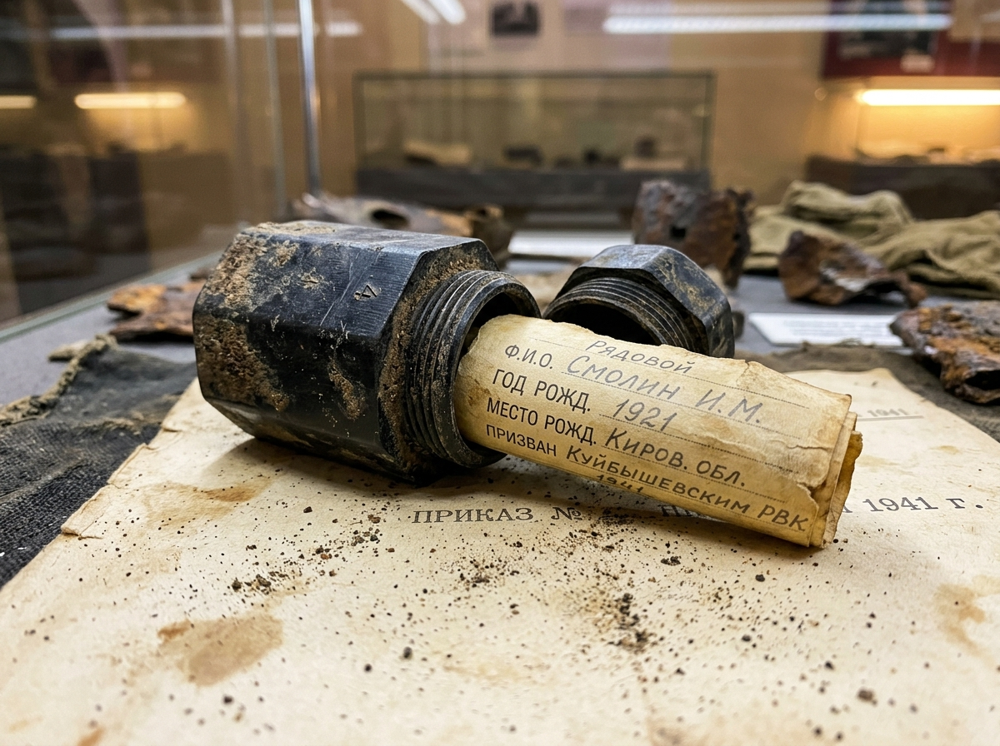
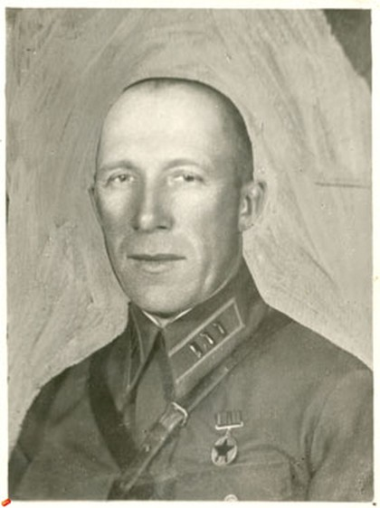
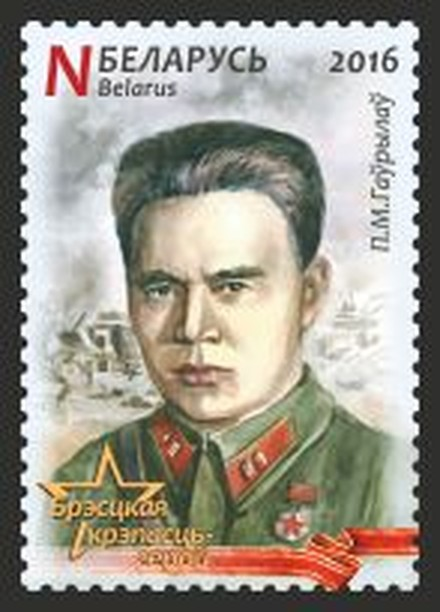

01
Расчистка 85% слоя
Раскоп
Зажмите левую кнопку мыши и расчистите слой почвы. Когда откроется не менее 85% площади, медальон можно передать в лабораторию.
Интерактивный канвасСвязь поколений: мы помним
Лаборатория безымянных высот
Интерактивная поисково-криминалистическая лаборатория: вы лично расчищаете грунт над смертным медальоном, проявляете чернила в ультрафиолете и восстанавливаете судьбу реального защитника Отечества.

ИСТОРИЯ АРТЕФАКТА · ПРИКАЗ НКО СССР № 138
Цилиндрический или восьмигранный пенал из карболита/эбонита образца 15 марта 1941 года (Приказ НКО СССР № 138) с герметичной резьбой. Внутрь помещался двойной бумажный бланк: один экземпляр при гибели передавался в штаб и архив, второй — отправлялся родственникам.
Среди бойцов бытовало стойкое фронтовое суеверие: «Заполнишь смертный медальон — непременно убьют в первом же бою». Многие выбрасывали бланк или хранили в капсуле швейные иголки, нитки и спички.
Именно поэтому каждая капсула с сохранившимся читаемым бланком в поисковых экспедициях — это редчайшее событие и великое счастье. Каждый расшифрованный медальон возвращает из безызвестности имя солдата, считавшегося пропавшим без вести более 80 лет.
«Каждый прочитанный медальон — это не просто документ. Это живой человек, вернувшийся с войны домой спустя десятилетия неизвестности.»
| Материал капсулы: | Карболит / эбонит (ГОСТ 1941 г.) |
| Вкладыш: | 2 экземпляра бланка (пергамент) |
| Метод экспертизы: | УФ-люминесценция (365 нм) и бинаризация |
| Статус в проекте: | 3 реальных установленных имени |
Точная цифровая реконструкция полевой работы поисковых отрядов и криминалистической лаборатории.
Зажмите левую кнопку мыши и расчистите слой почвы. Когда откроется не менее 85% площади, медальон можно передать в лабораторию.
Интерактивный канвасНастройте контраст, порог и светофильтр (в том числе УФ), чтобы проявить текст бланка — как при криминалистической экспертизе документа.
УФ-спектроскопияОткройте досье, фотографии и источники. Скачайте именное «Свидетельство Памяти» в формате PNG.
Архивные документыТри реальных судьбы. Без вымысла: подлинные биографии, военные фотографии и ссылки на открытые архивы.

Сектор №1: Буйничи БУЙНИЧИ · 1941Командир 388-го стрелкового полка. Оборона Могилёвского рубежа; один из прототипов комбрига Серпилина у К. Симонова.
 Сектор №2: Минск
ПОДПОЛЬЕ · 1941–1943
Сектор №2: Минск
ПОДПОЛЬЕ · 1941–1943
Организатор антифашистского подполья в оккупированном Минске: связь, листовки, помощь военнопленным.

Сектор №3: Брест БРЕСТ · 1941Командир обороны Восточного форта Брестской крепости. Герой Советского Союза.